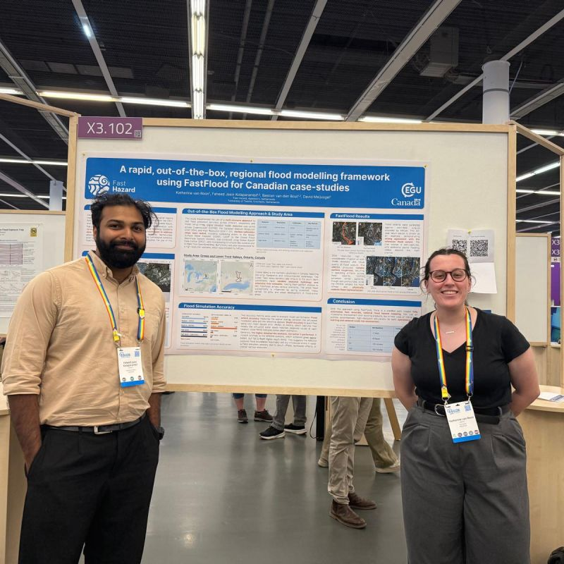
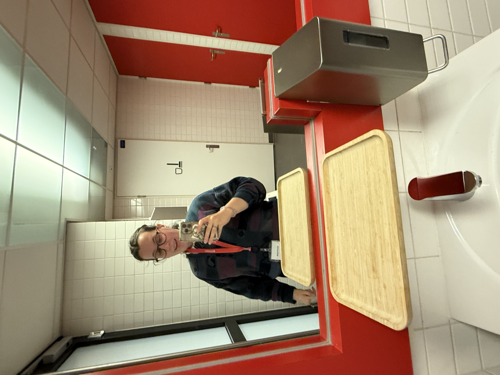
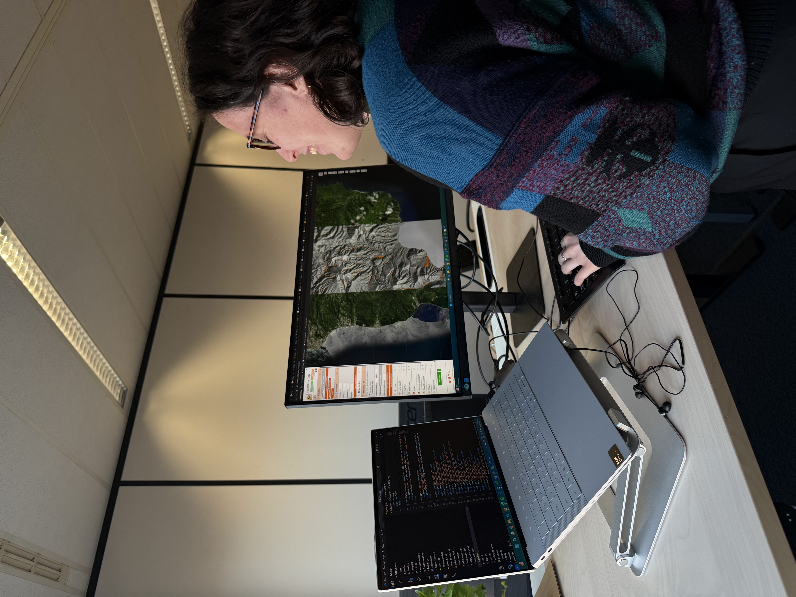

From satellite
to street level.
I build spatial tools and analysis that translate complex climate hazard data into decisions communities can act on — before disaster strikes.
Projects
A selection of flood risk analyses, remote sensing workflows, and climate resilience tools.
 15.30°N · 61.39°W
15.30°N · 61.39°W
Risk Assessment · StoryMap
Compound Flood Risk — Dominica
Building-level flood risk index for Dominica combining six flood return period rasters with a ~39,750-building exposure layer, following the UNDRR Hazard × Exposure framework and framed around Hurricane Maria (2017).
View Project In developmentMore on the way
A SAR flood mapping pipeline, a CHIRPS rainfall analysis, and a reusable composite risk-scoring tool are all in progress — extending the Dominica methodology to new hazard layers and contexts.
See what's in progress →About
I'm a climate hazard consultant and geo-data specialist based in the Netherlands, working at the intersection of flood risk modelling, anticipatory action, and disaster risk reduction.
At Fast Hazard, I design scalable flood modelling workflows and help translate dense technical outputs into tools and products that real decision-makers can act on — from national risk assessments to community-level early warning systems.
Tools & Platforms
Languages & Libraries
Methods
Updates
Notes from the field — conferences, projects, and things I'm learning.

July 2026
Two conferences, two continents
Presented a data-agnostic FastFlood approach at EGU Vienna, then organised a tutorial session at the ISPRS symposium in Toronto.
Read more →
June 2026
DRRS Flood Day in Utrecht
Met the DRRS Flood team in person for the first time and served solo as an expert, prepping for the upcoming hurricane season.
Read more →
March 2026
One year at Fast Hazard
Reflecting on a year of flood modelling, project leadership, and learning the business side of climate consultancy — from deliverables to contract negotiations.
Read more →